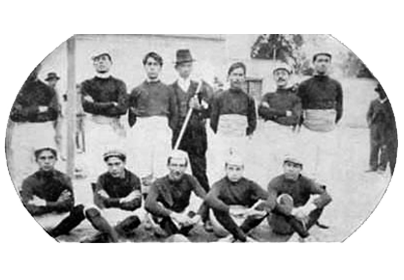
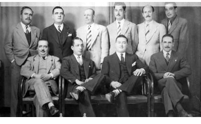
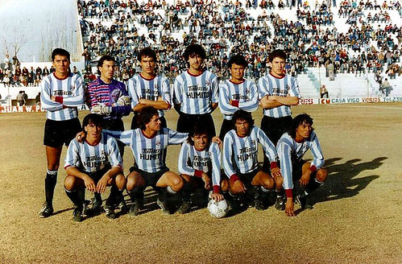
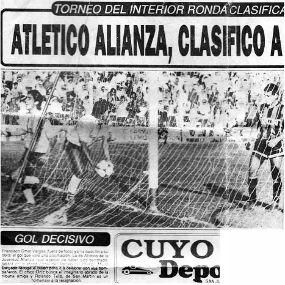
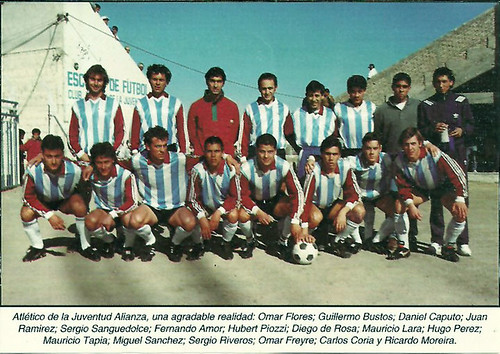

FUNDACIÓN

El fútbol en la Argentina se radicó a mediados del siglo XIX, de la mano de inmigrantes ingleses que llegaban a establecerse en el país y en la región. En el caso de San Juan, esta oleada llegaría a los primeros planos de la clase alta de la sociedad. paralelamente la clase media y baja le daría vida a este famoso deporte. En 1893 se crea la "Argentine Association Football League" dando lugar el sueño de unificar el fútbol a nivel nacional. En estos años y a comienzos del siglo XX, en la provincia, trabajadores rurales, descendientes de inmigrantes o de ambas partes siendo este sector masivo de la sociedad que daba comienzos a torneos barriales entre grupos de personas que le daban color y pasión a la diversión para saber quien era el mejor de todos.
Por un lado un grupo de jóvenes inquietos egresados del Colegio Nacional Doctor Pablo Cabrera y de la antigua Escuela de Minas (hoy Escuela Industrial Sarmiento), muchos de estos aspirantes a un sueño que se caujo en la vieja esquina de Mendoza y San Luis, para empezar a hacer historia. Este sueño se completaría el 14 de junio de 1905 se gestó en el distrito Concepción, y se usó de nombre "Club Atlético de la Juventud" (ya que los fundadores eran de una edad entre 19 y 27 años).
Se votó para que Fernando Soldatti se convirtiera en el primer presidente del club, acompañado de Gilberto Flores Bravo, J.Salvatierra, Ricardo Álvarez, J.Díaz, Ramón Bruna, Indalecio Carmona Ríos, Eduardo Vaca, Luis Ponferrada, J.Dalmiro Yanzon, Erick Rosental, Rudencio Gallastegui, entre otros. En total fueron Treinta y siete los fundadores. Y se eligió como colores el Celeste y el Blanco para la camiseta en honor a la Bandera Argentina.
Al paso de los años jugadores y dirigentes de los extintos equipos de "San Pantaleón" y "Benjamín Sánchez" le dieron forma al club, para disputar los primeros torneos amateurs barriales que cada vez eran populares entre el público en general. Pero albergar a todo ese público era dificl ya que no contaba con estadio propio es propio es así que el socio Indalecio Carmona Ríos fue el generoso ya que donó el predio en Concepción, por calle Chile entre la Rioja y Aberastain, donde quedó instalada la primera cancha de Atlético.
Formación de Juventud Alianza en 1923.
Durante los años venideros el club siguió participando junto a clubes que invitaban instituciones colegas y formaban grupos con los cuales jugaban campeonatos y cuya organización se iban turnando. Hacia 1920 el Gobierno de San Juan propone darle a la actividad formal y elabora un proyeccto de ley en conjunto con varios clubes como el "Buenos Aires al Pacífico", "Racing", "Correos y Telégrafos"," Sportivo Árbol Verde y el Club Sportivo Desamparados, el día 30 de diciembre darían la primera asamblea y luego el 31 de enero de 1921 una nueva asamblea constitutiva de la que estas instituciones juntos al atlético de la juventud serían declarados miembros fundadores.
CAMBIO DE SEDE Y NUEVOS COMIENZOS

La década empezó con otros dos subcampeonatos (1941 y 1943) sin lograr títulos, la otra cara de este periodo es la pérdida del estadio del club producto del Terremoto que sacudió a la Provincia en el año 1944, el equipo quedó imposibilitado de disputar sus encuentros en la cancha ya que quedó destruida por tal hecho. Dejando así en claro que era difícil lograr la supervivencia institucional.
Pero el revés que tuvo el equipo de Concepción no paró el sueño de jóvenes y de personas tras obtener el título año 1945 (8 de la institución) que cortaba una sequía negativa de 9 años sin títulos. Fue un gran desafío para el club lograr la supervivencia y el orden institucional, dejando así en claro que era difícil quebrar los sueños de muchos jóvenes y de personas que día a día hacían crecer al club.
Luego de pasar por esa difícil situación se llega a un acuerdo para que el club dispute partidos en las demás canchas de los clubes rivales. No poder contar con una cancha propia era complicado, pero el club se las ingenió para la disputa de torneos locales
El título de 1946 lo dejó bien parado para clasificar a la Copa de la República 1945 logrando así su primera excursión a nivel nacional. Era una nueva experiencia, ya que los clubes de Buenos Aires y del interior eran la novedad del fútbol nacional.
El club disputó con muchas ansias el torneo pero una rápida eliminación en primera ronda a manos del Club Sportivo Independiente Rivadavia por 1:0 dejó el sabor amargo ya que las esperanzas de hacer un buen torneo eran óptimas para el gran plantel que enriquecían al club.
Luego de terminar segundos en los torneos de 1948 y 1949, se logra los campeonatos de los años 1950, 1952 y 1953 logrando una buena cosecha de títulos.
Los años posteriores sirvieron para lograr el orden a nivel institucional, además de dos subcampeonatos (1955 y 1956) y la disputa de fases finales de liga y el reconocimiento de ser el club con más popularidad de la provincia entre los clubes locales.
Entre otras cosas el club toma la decisión de un cambio obligado para ir a instalarse en un predio de aproximadamente 15 hectáreas en calle Mendoza antes de la vieja calle del Agua, hoy República del Líbano en la ciudad de Villa Krause. Ahí empezaron las grandes obras como la recordada inauguración de las primeras tribunas del estadio en 1959, surgidas de la imaginación de un apasionado por Atlético como Bartolo Baggio -exdirigente- que las soñó y las bosquejó en el piso de tierra de un viejo caserón, así fue que el club lograba un nuevo paso para su reconstrucción.
Siendo campeón del título de 1961 y un subcampeonato el año siguiente, el club dejó de ser protagonista a nivel local por las regulares campañas que disputaba.
El gran cambio estructural que tuvo el Fútbol Argentino en esos años daba la posibilidad de jugar en Primera División, por ello en mano de una invitación de la AFA, el Atlético de la Juventud disputaba el primer Torneo Regional 1967 (Argentina) logrando una vez más la página gloriosa del club, victorias por 2:0 y 3:0 ante Club Atlético Américo Tesorieri lo depositaba en la final del torneo que estuvo al borde del éxito tras perder el título a manos del club Atlético Club San Martín (derrotas por 1:2 y 0:1).
Pese a eso el club tuvo el derecho de jugar el Torneo Promocional 1967 (Argentina) que reunía a los subcampeones de las llaves disputadas en el torneo Regional. Las únicas dos victorias que obtuvo fue frente a Racing de Córdoba (3:2 en San Juan y 1:2 en Córdoba), con un solo empate y 11 derrotas (8:2 a manos de Club Atlético Huracán y 6:1 frente a Club Atlético Banfield, siendo las derrotas más duras que sufrió el equipo) dejaron en último lugar al modesto club de Villa Krause. Gracias a este logro fue el primer paso a primera división, a tal magnitud de torneo tuvo que disputar sus encuentros como local en el estadio del Parque de Mayo (San Juan) ya que el estadio estaba siendo construido, logrando una buena recaudación de dinero y de espectadores.
El plantel estaba conformado por: (Entre paréntesis último equipo proveniente) Arqueros: José Osvaldo Sergio.
Defensores: Pedro Rodríguez, Jorge Ochoa, Juan Carlos Alemán (Estudiantes (Buenos Aires)), Osvaldo Laprovitola, Pedro Grecco, Luis Castellano.
Mediocampistas: Edgar Rosas (Atlanta), Víctor Antonio Legrotaglie (Atlético Argentino (Mendoza)), Armando Roque Palacios, Rogelio Pacheco, Benito Jofre, Carlos Gallerano.
Delanteros: Ángel Vega, Hugo Riveros, Carlos Rodríguez, Daniel Juárez, Miguel Achával (San Martín (Mendoza)).
Director Técnico: Ignacio Rodríguez Nieto.
El goleador del equipo fue Hugo Riveros con 5 tantos
Terminado ya su participación destacada siendo el primer equipo Sanjuanino en disputar dicho torneo, se pasó a torneos locales donde la suerte no fue la misma logrando malos resultados y regulares campañas solo el subcampeonato de 1971, dejando así una gran participación a nivel local.
FUSIÓN Y NUEVOS COMIENZOS

Mientras tanto en la ciudad de Santa Lucía, la ilusión era la gloria. Según atestiguan quienes vivieron esas épocas, pequeños clubes como "El Palermo", el "Atlético Santa Lucía" y el "Club Friogrifico" fueron unos de los iniciadores de Alianza que iba a suceder en pocos años. Pero la historia grande les tenía un objetivo: unir fuerzas y conquistar el fútbol a nivel nacional.
Los recursos escasearon y el predio del Barrio Atlético era un tesoro sin explotar del todo. Surgió la idea de abrirse nuevos caminos ante la saturación de equipos que había en Villa Krause: Los Andes, Independiente, Rawson, Boca. Todos le quitaban oxígeno y mirar al Este, a Santa Lucía, fue la elección.
El 20 de noviembre de 1973, con 67 socios en asamblea y bajo la presidencia de Antonio Meritello, se aprobó la fusión con Alianza con 65 votos a favor, 1 abstención y 1 en contra. Desde ahí, fue volver a empezar. Primero con obras. Después con logros deportivos.
Luego de esta nueva institución con base en la ciudad de Santa Lucía (San Juan), el club iba a conformar un plantel de jerarquía y con jugadores que se desempeñaban muy bien en ámbito local consiguiendo el título de la liga en 1974 siendo este el principio de un año que sería considerado el "Año de Oro". Luego de la consagración el club tuvo el derecho de disputar por Segunda vez el Torneo Regional 1975 (Argentina) disputando las semifinales frente al Sportivo Pedal (San Rafael) siendo victorioso en la seria para disputar la final del torneo.
Siendo el día 20 de abril de 1975 en que el nuevo club lograba ser Campeón del torneo disputando la final nuevamente con el club Atlético Club San Martín.
Luego de la consagración el club tuvo cinco meses para prepararse, reunir refuerzos y lograr un plantel casi con la misma base de jugadores para disputar el Campeonato Nacional de fútbol (Argentina) una nueva experiencia a nivel nación para disputar el máximo torneo a nivel clubes de la Argentina.
Llegaba el mes de septiembre y el club disputaba el Campeonato Nacional 1975 (Argentina) logrando buenos resultados y dejando una buena imagen del club y del fútbol sanjuanino, entre estos partidos se destacan las victorias contra Club Atlético Gimnasia y Esgrima (Mendoza) por 2:1, Club Atlético Tucumán por 3:1, Asociación Atlética Argentinos Juniors por3:1, Club Ferro Carril Oeste 1:0, Club de Gimnasia y Esgrima La Plata por 4:3 y la gran victoria como visitante en la última fecha contra el Club Atlético San Lorenzo de Almagro por 3:2, siendo esta la primera victoria frente a los denominados "5 Grandes del fútbol argentino". No obtuvo empates y perdió 10 encuentros entre ellos 3:0 ante Club Atlético Boca Juniors.
El club tenía un plantel numeroso, pero poca infraestructura por lo cual disputó sus encuentros como local en el estadio de Sportivo Desamparados y un plantel de lujo compuesto por (En paréntesis equipo proveniente):
Arqueros: Raúl Tamagnone (San Martín (Mendoza)), Carlos Camargo (Independiente Rivadavia (Mendoza)).
Defensores: Juan Carlos Pereyra, Julio González (Sp. Desamparados), Gregorio Dubrowscyk (San Martín (Mendoza)), Juan Chacón (San Martín (Mendoza)), Alberto Rodríguez, Miguel Rodríguez, Emilio Tadini, Pedro Hidalgo (Sp. Desamparados).
Mediocampistas: Miguel Ángel Astrada (San Martín (Mendoza)), Raúl Paz, Franco Alverza, Eduardo Maryllack (Los Andes (San Juan)), Eduardo Lizzi (Los Andes (San Juan)).
Delanteros: Salvador Ángel Spadano (Sp. Desamparados), Arístides Rodríguez, Daniel Miguel (Rosario Central), Américo Ríos, Abel Coria.
Director Técnico: Hernán Carlos Rodríguez, luego fue sustituido por Ernesto Picot hasta terminar el Torneo.
El goleador fue Salvador Spadano con 10 tantos.
Una vez terminado la participación del club atlético de la juventud Alianza, se puso a venta al jugador Aristides Rodríguez (Brillo en San Lorenzo De Almagro, entre otros clubes) y el predio que tenía en la ciudad de Rawson, con ese dinero se empezó a levantar el actual estadio del Centenario ubicado en la ciudad de Santa Lucía.
LOS 80' LA DÉCADA DE ORO

Los 80´ fue la década de oro en la institución no solo por el crecimiento institucional si no por la gran cantidad de títulos obtenidos.
Empezando con la obtención de los títulos de 1981 y 1982, luego el subcampeonato de 1983 (terminando detrás de Sportivo Desamparados). El 20 de noviembre de 1983 al fin se pudo lograr el sueño de todo club de barrio, lograr su propio estadio y su sede deportiva con la ayuda de los socios y la comisión directiva. El sueño de tener un tercer estadio ya era realidad un estadio modelo en esos años y que podía albergar cualquier equipo.
EL PENTACAMPEONATO Y ÚLTIMO PASO EN PRIMERA

Un gran momento fue surgiendo en el pequeño club de Santa Lucía, grandes jugadores vestían la camiseta y las tribunas con hinchas y simpatizantes que partido a partido seguían y alentaban al club, en 1984 lograba el título sobre Atl Trinidad, en 1985 lograba el Bicampeonato ganándole en la final a Peñarol por 2:1 pero eso no era todo si no también se clasificó al Torneo Regional 1985 (Argentina) logrando así una nueva página a nivel nacional.}
En el torneo se pudo ver y apreciar a un plantel con buen fútbol y grandes actuaciones. Durante el torneo el club obtuvo nada más y nada menos que el invicto y el gran partido de la última fecha en Mendoza frente a gimnasia por el primer lugar logrando un empate en 2 goles y obteniendo el primer lugar y logrando disputar la final.
En la final enfrentó al club Riojano de Independiente, logrando así ambas victorias en los partidos y el ansiado consagración al Campeonato Nacional 1985 (Argentina). Una vez más el club de Santa Lucía lograba codearse con los grandes equipos de la primera División del fútbol Argentino.
El gran esfuerzo en el torneo Nacional fue mucho terminando en último lugar con la única victoria frente a Argentino (3:1) luego derrota por (2:0), 1 empate y derrota frente a Club Atlético San Martín (Tucumán) (0:0) y (4:0) y 2 derrotas ante Club Atlético Vélez Sarsfield (1:2 y 3:0).
Pese a eso se pasó a Ronda de Perdedores (Un tipo de reclasificatorio) enfrentando a Club Atlético Temperley siendo victoria en San Juan por 4:3 y luego derrota por 4:1 siendo eliminado del torneo.
Otra vez un plantel plagado de buenos jugadores como: (En paréntesis equipo proveniente):
Arqueros: Carlos Manzanares.
Defensores: Aldo Rodríguez, Juan Torletti (Belgrano (Córdoba)), Hubert Piozzi, Rubén Ceballos, Roberto Mallea.
Mediocampistas: Jorge Pereyra (Huracán (San Rafael)), Miguel Seronero (Racing (Córdoba)), Argentino Poblete, Ricardo Dillon (Argentino (Alvear)), Daniel Ferrero, Julio Bond (Racing (Córdoba)), Omar Vargas.
Delanteros: Jorge Muñoz, David Pelletan, Rubén Molina (Racing (córdoba)), Héctor Riveros, Darío Giuliani.
Director Técnico: Adalberto Muggione.
.Luego de terminar el Torneo Regional se fueron: José Gaitán, Eduardo Foressi y Luis Scatolaro.
.El goleador del equipo fue Jorge Muñoz con 3 Tantos.
El club no paso las expectativas, lamentablemente iba a ser la última experiencia a nivel nacional con los equipos de la primera división tal cual el cambio de categorías y el profundo cambio político tras una restructuración hicieran que el club disputara el Torneo del Interior (1986-1995) una serie de torneos anuales que lograban el ansiado ascenso a la segunda nueva categoría del fútbol argentino denominado: Primera B Nacional.
El cambio político y del fútbol hicieran que el club disputara el Torneo del Interior (1986-1995) una serie de torneos anuales lograba el ansiado ascenso a la segunda categoría del fútbol argentino denominado Primera B Nacional.
En 1986 lograba el Tricampeonato superando al Dep. Aberastain, y la clasificación al Torneo del Interior 1986. El club disputó una liguilla clasificatoria a nivel provincial pero no pudo obtener buenos resultados por lo cual no pudo clasificar a dicho torneo.
Para la temporada 1986–1987 el Club clasificó en un grupo parejo de principio a fin, empezando con 7 partidos invicto con 4 victorias y 3 empates, hasta la derrota por 2:1 ante Club Atlético San Lorenzo de Alem, a partir de ahí cuatro empates consecutivos lo dejaron casi sin chances de clasificación, pese a las dos victorias en las últimas fechas, no se pudo clasificar a rondas finales tras terminar en tercer lugar.
En 1987 lograba el campeonato tras superar a Sportivo Desamparados, logrando así la clasificación al Torneo del Interior 1988, siendo parte del grupo B que logró el primer lugar y en forma invicta con partidos como el 2:2 ante Club Atlético Argentino (Mendoza), 2:0 al Club Sportivo Estudiantes (San Luis) y el 3:1 Sp. Pedal (San Rafael) entre otros resultados.
Se conformó en el grupo "B" terminando en forma invicta con 4 victorias y solo 2 empates. En la 2ª ronda disputó difíciles encuentros con solo 4 puntos en 6 en juego siendo así que dos derrotas lo eliminaron del torneo mientras que en la última fecha cerro como local con una goleada por 6:1 ante Alianza Futbolística, terminando en tercer lugar con 2 victorias, 1 empate y 3 derrotas.
En 1988 lograba el Quinto título consecutivo tras superar por un punto a San Martín, logrando así la clasificación para el Torneo Del Interior 1989, se mantuvo la misma base del torneo pasado y algunos refuerzos. El club llegó a lo más alto, primero disputó la primera ronda: "Región Cuyo - Grupo B" clasificando en primer lugar con 7 puntos producto de tres victorias (Incluida una goleada como local por 7:0 ante Club Atlético Juventud Unida Universitario, solo consiguió un empate y tan solo dos derrotas.
En el grupo "Final Cuyo" volvió con la misma regularidad como en la fase anterior, siendo así consiguió el invicto por 4 fechas hasta terminar con dos derrotas (una a manos de su eterno clásico Club Atlético San Martín (San Juan)) el grupo se hizo muy parejo e incluso se eliminó del torneo al eterno clásico por diferencia de gol, terminando segundo detrás de Alianza Futbolística y clasificando a los octavos de final.
En los cuartos de final se enfrentó al club Gaiman Fc (Chubut) con una victoria de 6-1 en la ida y en San Juan por 3-0.
En semifinales se enfrentó al duro e histórico equipo de Club Atlético Nueva Chicago el partido de ida se jugó en San Juan con victoria del Local por 4-2, trece días después en el barrio de Mataderos el equipo Santaluceño perdió por 3-1 (Global 5-5) por lo cual se tuvo que ir a definición por penales donde tanto el arquero de juventud alianza como la suerte misma dejó la victoria para el visitante por 6-5 en penales depositándolo en la final del torneo.
La final se jugó en la ciudad de Bahía Blanca enfrentando al Club Olimpo con victoria del local por 3-1, pero una semana después en Santa Lucía a cancha llena se disputó la vuelta y en un resultado mentiroso con victoria del local de 2-1 e incluso con gol no convalidado y en la misma jugada penal errado. El club de bahía blanca ascendió a la "B" Nacional dejando a atlético de la juventud alianza en la puerta de la gloria.
Pese al tropezón en la final los títulos para que el Pentacampeonato ya era realidad, ya se podía hablar del mejor equipo de San Juan tal hazaña que es el único equipo en lograr nada más y nada menos que 5 títulos consecutivos siendo un récord en la liga sanjuanina de fútbol hasta la actualidad.